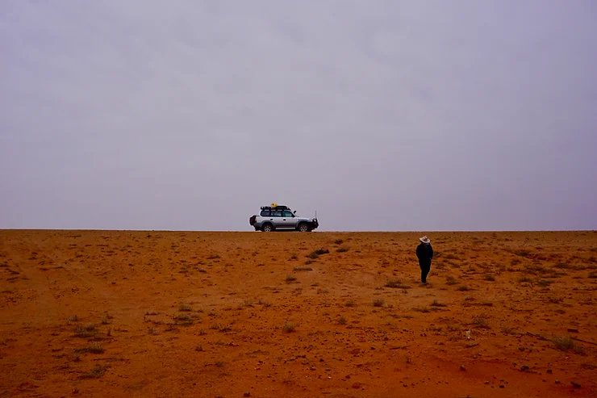

The first day solo was full of wonder and excitement. My, what an adventure! “I’m such a badass,” I told myself. Now, I’d done a lot of remote adventuring “by myself”, likely a function of my lack of patience, inclination to go to bizarre places, and a certain level of reclusive behavior. Yet in spite of this, I’d never really done an adventure entirely alone. Even in Vanuatu, when The Explorers Club expedition team left, and I stayed on a remote island in the middle of the Pacific Ocean with an indigenous tribe of female chiefs, I never felt alone. There were always so many women around me, to the point that I could barely go to the “bathroom” by myself. However, that was not the case here. I was well and truly by myself, and my success or failure was dependent entirely on myself.
I headed south - with no clear plan, just driving in whichever direction peaked my interest. Alone, I could move fast. There was no one slowing me down. At first this was exhilarating, but it eventually wore on me, and I longed for the days when my friends sat in the passenger seat. During my time driving from Broome to Geraldton, I often regretted not returning to Sydney the way I came, back across the Tanami Desert. The Tanami, with all its desolation, stole my heart in a strange way. Additionally, there was a certain level of security in following the route I had been on before. A security that my current path did not hold. But I had driven too many thousand kilometers to turn around. When things got tough, I toyed with the idea of putting Laszlo on a road train and flying back to Sydney - and when things got really tough, I had the passing whim of selling him all together.
When I rocked up to Geraldton, Western Australia, still lacking a clear idea of what the next month would hold, I headed to the public library for internet and a place to lay out all of my maps that was not subject to wind. My challenge was to get off the bitumen (pavement), away from the caravans and designated campsites, replete with fire regulations but still close enough (a few days away) to other people in case something happened. Then I met a couple who had a self proclaimed “allergy to bitumen” - just the kind of people I wanted to talk to. They owned a tearoom in Sandstone, Western Australia and had come into Geraldton to re-stock. Pouring over the maps, they showed me the 4x4 tracks that the locals used to get around in avoidance of the paved roads.
The idea became that even if I got stuck, I would likely see one other vehicle everyday or every other day. As long as I had enough water and stayed with my vehicle, I would be fine. Just like that I had a plan. I went about getting ready to go back into the bush, restocking water (90 liters in the cabin) and diesel (160 liters in my tanks and 60 liters on the roof rack). I fully intended to leave Geraldton that afternoon. But it started to rain. Like really rain. I turned on the radio to discover a massive storm was coming through. Realizing that the tracks would turn to deep mud, I knew my plan would have to be put on hold. All the caravan parks were full of people that possessed more foresight and weather acuity than my spontaneous podcast listening self. Disappointed, I ended up at the 24 hour free parking at the industrial port (cringe). The parking was situated between the port and the railroad track, attracting all the characters that come to those sort of locations as the evening settles in - to my dismay, even in the middle of a massive storm. I covered all the windows with my sarongs quasi curtains, and locked myself in. I tried to get some rest as my knife dug into my hip providing a placebo sense of security. It poured and gale force winds shook Lord Laszlo throughout the night - in spite of the less than ideal surroundings, I was relieved to be parked on a surface where I wouldn’t be bogged.
In the morning, I was out of the industrial yard faster than a rat up a drainpipe. It was a cold drizzly morning, and I headed east and found a lovely spot to make coffee and eggs with a view of a double rainbow - just the energy I needed. Yet I still felt a bit of trepidation, as this was the least researched part of the journey this far, and I am not as spontaneous as I like to think. No one really knew what I was up to and I couldn’t predict how things would pan out.
Throughout the day, the car sightings diminished. I continued on and got diesel at every opportunity. It seemed silly to top up 10 liters here, 20 liters there, but there was not much information on where diesel would be throughout the Goldfields and I didn’t know how long I would be going between re-fuels, so I took every opportunity I could get. I would eventually be thankful for my vigilance, as due to the rain, the diesel truck hadn’t been able to restock some of the remote service stations, leaving a few of the locals stranded.
It was late afternoon when I pulled into the remote town of Sandstone and found the tearoom of the lovely couple that recommended this track. The husband and I poured over the maps while the wife made me a quiche and coffee. They would be going down the track four days later and said that if I had any trouble they would find me when they headed east. I was warned of perils of hitting cows and kangaroos - as realistically hitting one was the most dangerous thing that would happen. A part of me didn’t want to leave their hospitable tea house. There were orange trees, splendid company, in a odd way I felt so safe with these grey nomads. But off I went. Nervous and excited the track worsened, I let down my tyres, remained vigilant, and loved every minute of it.
Part of what I love about remote four-wheel driving is the concentration required that keeps you living in the moment. There are so many obstacles that could add a hiccup to your day, rocks and desert crabs that will puncture your tyres, bulldust that will envelop your entire vehicle, washbeds that rattle your brain. You have to be entirely in the moment and focused. It is hard to get bored like I do on sealed roads. I would go days without seeing another soul. And then a dust cloud would denote an approaching vehicle. I would watch as another Toyota whizzed by, sometimes with grey-nomads and sometimes a literal truckload of burly Australian men drinking XXXX Gold. In keeping with outback custom, I would wave - and often sparking a conversation with the fellow travelers over the UHF as long as our antennas allowed.
As brave as people thought I was, the night time always scared me. I would pull off the road and hide my truck in the bush. I always planned my day so dinner was eaten, dishes washed, and I was locked in my LandCruiser by nightfall. I would use a red handlamp to avoid attracting attention and I would try to be unnecessarily quiet. Sometimes it felt silly, as I would go days without seeing a soul, but I was almost always trespassing. There came a point when the charm of being alone in the wilderness wore off. I was always nervous about running out of water (in retrospect this was likely a little unnecessary). I longed for the days when Marisa and Sandy were traveling with me. I was spending a small fortune as my satellite phone calls were mounting but at that point I didn’t care, I craved human contact. Don’t complain, stay positive I would tell myself. This was your brilliant idea! No one is forcing you to do this. I would tell myself I was just hungry and tired, I would snap out of it. I felt lucky to have been able to pull off a trip of this caliber and be not stuck at some desk job in the city, but at the same time there were moments when the adventure wore off. And it felt good to admit that adventures are not one long span of awe- inspiring euphoria they are tough.
One day I found a specular remote bush camping spot in a salt bed. It was nearly 5:00pm. Late for setting up camp - I normally started this around 3:00pm because driving at dusk was dangerous; it was when all of the wildlife came out of play. And hitting a cow or kangaroos would not only be bad for them, but could be fatal for me too. So that day at dusk I stopped, made a kale salad, did the days dishes, and looked for my lost toothbrush (only ⅔ of those endeavours were successful). It was a rough night - dreams of sugarplum fairies were not dancing in my head, but rather my two fears: running out of water and the hesitation of people. As I tried to sleep, my mind played tricks on me with visuals of my exact location littered with thousands of empty water bottles and jerry cans covering the entire salt bed and a lone man banging on my door. Wait, was I actually dreaming? No, that is not a dream. Something or someone is actually banging on the Landcruiser door.
There was no moon and no light pollution. It was pitch black and I couldn’t even see my hand extended arms length in front of me. I had no idea who or what was there. But something was definitely there. I went into fight mode, adrenaline pumped thick, and my heart beat so fast I thought I might have a heart attack before I could even be attacked by the unknown pounding noise. I always slept with my knife, axe, and satellite phone within arm's reach - although on this particular night I was not wearing pajama pants - which I deeply regretted. I quietly grabbed my axe and I laid there terrified, shaking like a leaf, calculating my surprise attack. Whatever it was, was on the back right door (right next to my bed), so I decided to crawl up to the front left seat, open the front door and jump on the roof rack - it made sense at the time, although the execution was less than graceful and half nude. When I opened the front door, the banging on the door stopped. I froze. I peered to the other side of the vehicle and jumped on the roof. My toes gripped the steel rack as I stood there, trembling in the cold and fear, unable to determine what shape was below.
Was it a serial killer, a coked-up truckie, a dingo, or a kangaroo? I forgot to grab my glasses. Golly, I felt useless. It is amazing that humans have come as far as we have. And then the unidentified shape let out a sound, not a human sound, almost a dinosaur- like moo. I braced myself between my jerry cans and spare tyre, now laying on the roof rack to get closer to said object. There were four legs and fur. It was a baby cow banging itself against the truck! I started to cry in relief. I crawled back into the safety of my bed in Lord Laszlo. I put on pajama bottoms, in case I had any more night visitors, and slept until 11am. I decided to take it easy for the next day. I liked my spot, the baby cow lingered and we became friends. I spent the day talking to the cow and Lord Laszlo. I whipped out a pumpkin I had been traveling with for hundreds of kilometers, lit a fire and let it cook for 3 hours. I did yoga, made a tahini sauce and topped up Laz’s oil. Before I knew it, the sun was setting and I was smashing a pumpkin in the sand. It was glorious to slow down and truly take time to reflect.